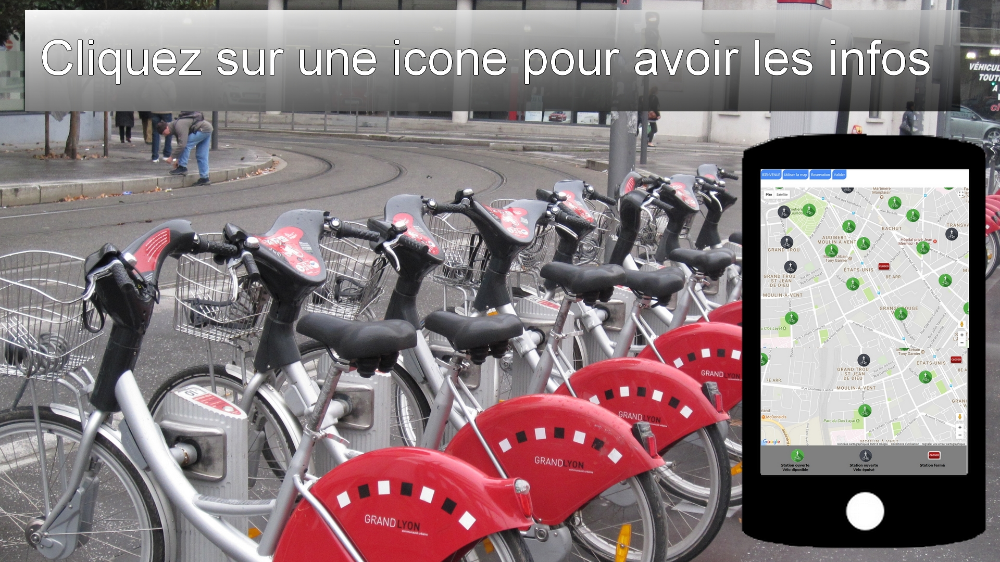

Bicycle in Lyon
Vous avez réservé un vélo

BIENVENUE
Utiliser la map
Reservation
Valider
Aggrandir la map
Nouvelle réservation
Station ouverte
Vélo diponible
Station ouverte
Vélo épuisé
Station fermé
Réservation
Veuillez cliquer une station afin d'avoir plus d'informations.
Choisir cette station
Cadre de signature ci-dessous
Clear
Reserver
Station
Addresse
 Station fermé
Station fermé